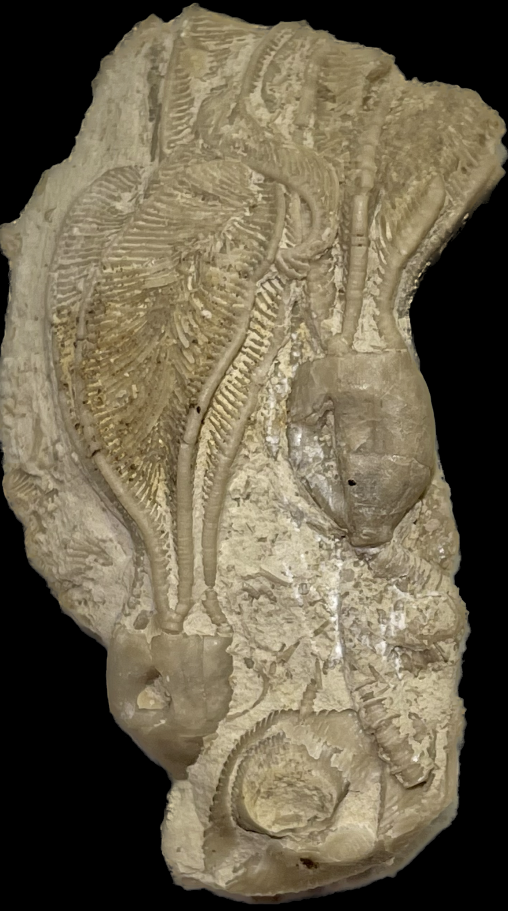
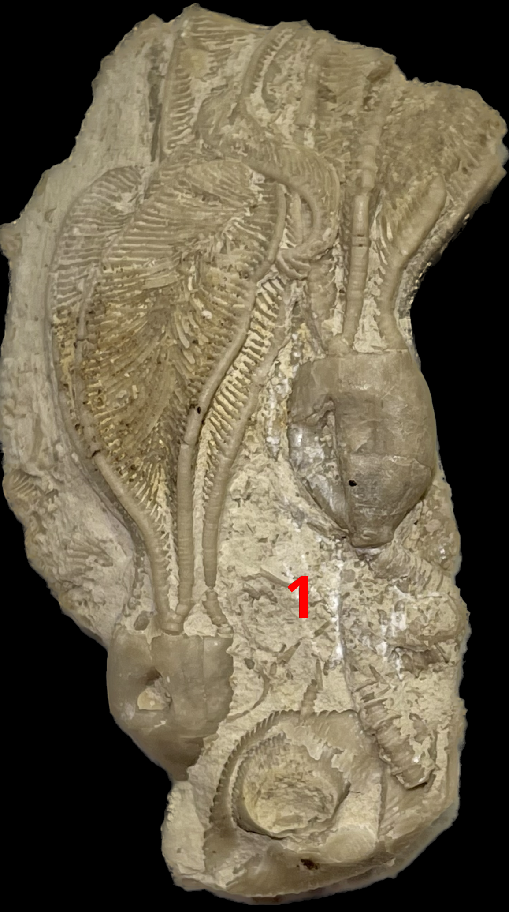
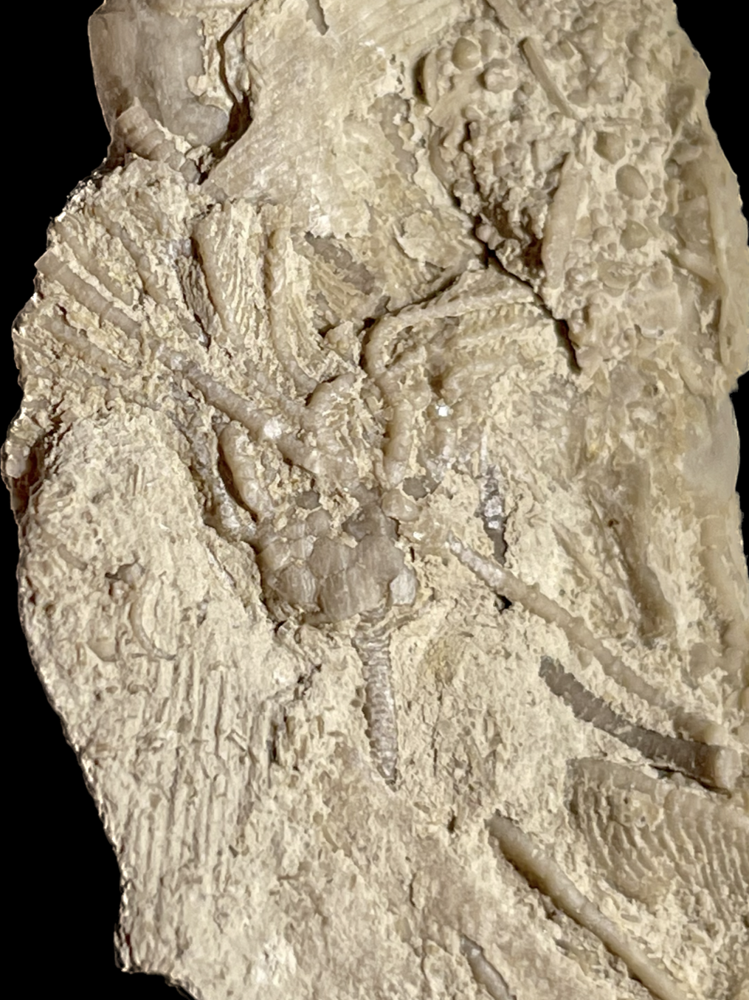
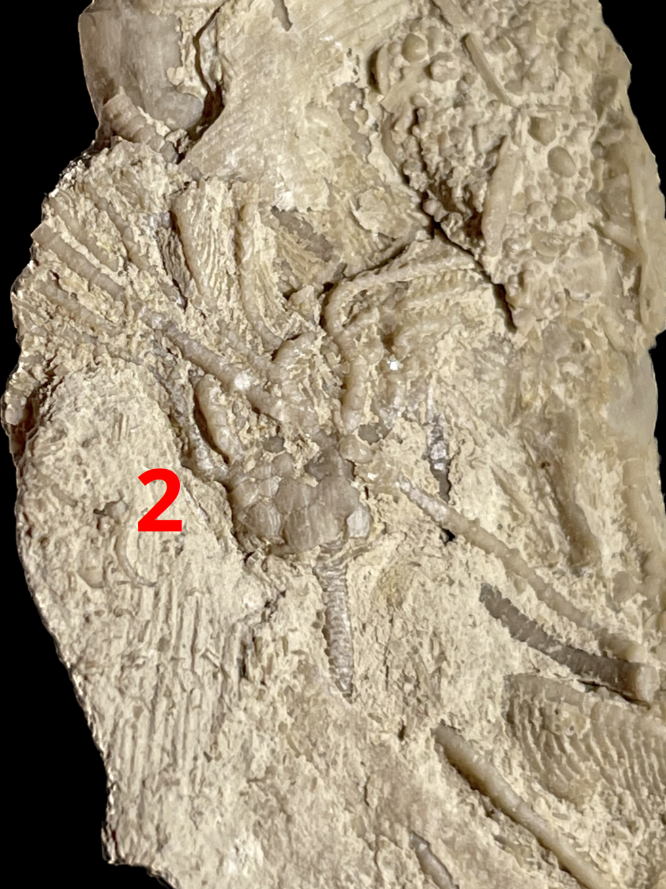

1. Dichocrinus delicatus?
2. Rhodocrinites nanus?
Mississippian
Hampton Formation/Maynes Creek Formation
Le Grand, Iowa, USA
Size: 3.5 cm crowns for the Dichocrinus

Copyright © 2024 by Samuel Kim, all rights reserved